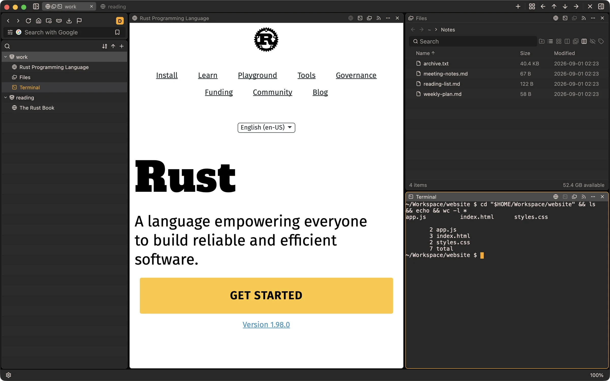

dopaminebeta
A macOS desktop browser built on gpui. Split a space into web pages, a terminal, a file browser, and RSS — then keep them all on screen at once.
Download for macOS
Couldn’t load release details from GitHub right now — the download link above still works.

Install with Homebrew
brew install --cask Route23/tap/dopamineThe cask clears the quarantine flag for you.
First launch from the .dmg
dopamine is signed ad-hoc, not notarized by Apple. If you install
from the .dmg, macOS will refuse to open it the first time.
Run this once, then open the app:
xattr -dr com.apple.quarantine /Applications/dopamine.appInstalling with Homebrew does this for you.
Requirements
- macOS 14 (Sonoma) or later
- Apple Silicon (arm64) only — there is no Intel build